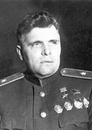
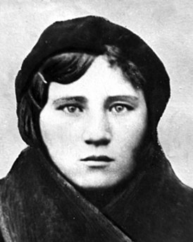
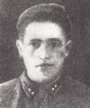

Водопьянов Михаил Васильевич
Михаил Водопьянов (6 ноября 1899 — 11 августа 1980) — советский лётчик, участник операции по спасению экспедиции парохода «Челюскин», один из семёрки первых Героев Советского Союза. Участник арктических экспедиций. Член Союза писателей СССР. Член ЦИК СССР. Генерал-майор авиации.

Константинова Ксения Семёновна
Ксения Константинова (18 апреля 1925 — 1 октября 1943) — Герой Советского Союза, участница Великой Отечественной войны, старшина медицинской службы.

Алексеев Иван Михайлович
Иван Алексеев (8 ноября 1922 — 5 октября 1944) — советский офицер, участник Великой Отечественной войны, командир стрелковой роты 1-го гвардейского стрелкового полка 2-й гвардейской стрелковой дивизии 56-й армии Северо-Кавказского фронта, Герой Советского Союза (16.05.1944), гвардии капитан.